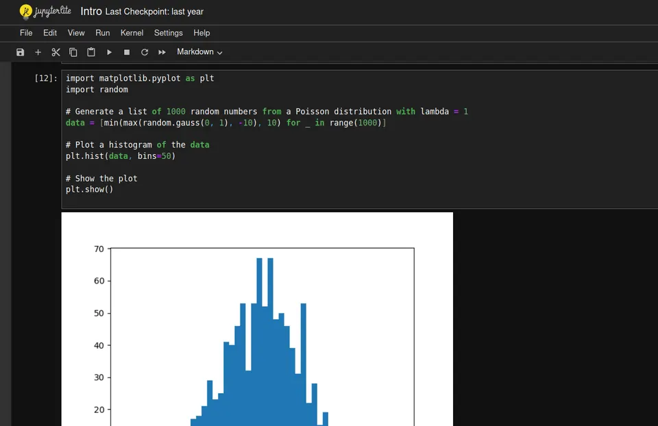

Last modified: July 06, 2024
This article is written in: 🇵🇱
Czym są Jupyter Notebooks?
Jupyter Notebooks to zaawansowane środowisko pracy umożliwiające tworzenie i udostępnianie interaktywnych dokumentów, które integrują kod z bogatymi treściami multimedialnymi takimi jak teksty, wykresy, animacje, a nawet elementy interaktywne. Chociaż najczęściej kojarzone z językiem Python, Jupyter Notebooks wspierają wiele innych języków programowania, takich jak R, Julia, Scala, i wiele innych, dzięki czemu są niezwykle wszechstronne.
Aby zainstalować Jupyter Notebook, można skorzystać z różnych metod w zależności od preferencji. Poniżej przedstawiam kilka najczęściej używanych sposobów instalacji Jupyter Notebook:
Instalacja za pomocą Anacondy
Anaconda to popularna dystrybucja Pythona, która zawiera wiele narzędzi do analizy danych, w tym Jupyter Notebook.
- Przejdź na stronę Anaconda Distribution i pobierz wersję odpowiednią dla Twojego systemu operacyjnego.
- Postępuj zgodnie z instrukcjami instalatora dla Twojego systemu operacyjnego.
- Otwórz Anaconda Navigator i kliknij przycisk "Launch" obok Jupyter Notebook.
- Alternatywnie, możesz uruchomić Jupyter Notebook z terminala, wpisując:
Instalacja za pomocą pip
Jeśli wolisz zainstalować Jupyter Notebook bezpośrednio za pomocą pip, wykonaj następujące kroki:
- Upewnij się, że masz zainstalowanego
pip. Możesz to sprawdzić, wpisując w terminalu:
Jeśli pip nie jest zainstalowany, możesz go zainstalować, postępując zgodnie z instrukcjami instalacji pip.
- Wpisz w terminalu:
- Po zakończeniu instalacji, uruchom Jupyter Notebook, wpisując w terminalu:
Instalacja za pomocą Menedżera Pakietów conda
Jeśli używasz menedżera pakietów conda, możesz zainstalować Jupyter Notebook w następujący sposób:
- Jeśli jeszcze go nie masz, możesz zainstalować
conda jako część dystrybucji Anaconda lub Miniconda.
- Wpisz w terminalu:
conda install -c conda-forge notebook
- Po zakończeniu instalacji, uruchom Jupyter Notebook, wpisując w terminalu:
Screenshot
Na zrzucie ekranu przedstawiono interfejs Jupyter Notebook z uruchomionym notatnikiem o nazwie "Intro".

Oto szczegółowy opis zrzutu ekranu:
Górna część interfejsu
- Pasek tytułu: Znajduje się u góry i zawiera nazwę notatnika ("Intro") oraz informację o ostatnim zapisie ("Last Checkpoint: last year").
- Menu: Znajduje się pod paskiem tytułu i zawiera różne opcje, takie jak "File", "Edit", "View", "Run", "Kernel", "Settings", "Help".
- Pasek narzędzi: Bezpośrednio pod menu, zawiera przyciski do wykonywania podstawowych operacji, takich jak zapisywanie, wstawianie nowych komórek, wycinanie, kopiowanie, wklejanie, uruchamianie wszystkich komórek, zatrzymywanie wykonywania kodu i inne.
Komórka z kodem
- Po lewej stronie komórki z kodem widoczny jest numer komórki
[12].
- Komórka importuje biblioteki
matplotlib.pyplot jako plt oraz random.
- Generuje listę 1000 losowych liczb z rozkładu Gaussa (w kodzie błędnie wspomnianego jako rozkład Poissona) o średniej 0 i odchyleniu standardowym 1, przycinając wartości do przedziału od -10 do 10.
- Tworzy histogram z danych za pomocą
plt.hist() z 50 binami.
- Wyświetla wykres za pomocą
plt.show().
Wynik
- Pod komórką z kodem znajduje się wykres histogramu przedstawiający rozkład wygenerowanych danych. Histogram pokazuje liczbę wystąpień danych w różnych przedziałach, co jest typowym sposobem wizualizacji rozkładu danych w Jupyter Notebook.
Zalety Jupyter Notebooks
- Możliwość łączenia kodu z treścią opisową w jednym miejscu, co ułatwia eksplorację danych i prezentację wyników. Dzięki temu użytkownicy mogą szybko iterować między pisaniem kodu, analizą danych i dokumentowaniem wyników.
- Bezproblemowe integrowanie wykresów, diagramów i innych wizualizacji bezpośrednio w notebooku, co znacznie poprawia czytelność i zrozumiałość analiz. Biblioteki takie jak Matplotlib, Seaborn czy Plotly umożliwiają tworzenie zaawansowanych wizualizacji danych.
- Umożliwiają łatwą integrację z wieloma bibliotekami i narzędziami dostępnymi w ekosystemie Python, takimi jak NumPy, Pandas, TensorFlow czy scikit-learn. To sprawia, że są idealne do zastosowań od analizy danych, przez uczenie maszynowe, po badania naukowe.
- Idealne do tworzenia tutoriali, kursów i dokumentacji, ponieważ można je łatwo udostępniać w formie interaktywnych notatek. Platformy takie jak GitHub, Nbviewer czy JupyterHub umożliwiają łatwe dzielenie się pracą z innymi.
- Zdolność do zapisywania wszystkich kroków analizy i wyników w jednym dokumencie ułatwia reprodukcję badań i analiz przez innych użytkowników.
Wady Jupyter Notebooks
- Bez odpowiedniej struktury, notebooki mogą stać się chaotyczne, zwłaszcza w większych projektach. Ważne jest, aby dbać o klarowny podział na sekcje i odpowiednie komentarze.
- Kod rozmieszczony w wielu komórkach może utrudniać jego śledzenie i debugowanie. W dużych projektach może to prowadzić do trudności w utrzymaniu i testowaniu kodu.
- Dla większych, bardziej złożonych aplikacji, tradycyjne środowiska programistyczne mogą być bardziej odpowiednie. IDE jak PyCharm czy VSCode oferują bardziej zaawansowane funkcje zarządzania projektem.
- Choć notebooki można śledzić przy pomocy narzędzi kontroli wersji takich jak git, ich binarna natura może sprawiać problemy przy łączeniu zmian z różnych źródeł. Narzędzia takie jak
nbdime mogą pomóc w rozwiązywaniu konfliktów, ale nie zawsze są idealnym rozwiązaniem.
- W Jupyter Notebooks kod może być wykonywany w dowolnej kolejności, co może prowadzić do niespójności stanu zmiennych i trudności w debugowaniu. Ważne jest, aby zawsze uruchamiać wszystkie komórki od początku do końca, aby upewnić się, że wynik jest spójny.
Jak efektywnie korzystać z Jupyter Notebooks?
- Regularnie porządkuj komórki, grupując powiązany kod i treść razem, oraz korzystaj z nagłówków dla lepszej czytelności. Twórz sekcje takie jak "Importy", "Przygotowanie danych", "Analiza" i "Wnioski".
- Opisuj skomplikowane fragmenty kodu, aby inni (lub Ty w przyszłości) mogli łatwo zrozumieć Twoje rozwiązania. Komentarze i markdown mogą znacząco poprawić przejrzystość notebooka.
- Unikaj polegania na globalnym stanie lub zmiennych, które mogą być modyfikowane w innych komórkach. Staraj się, aby komórki były jak najbardziej samowystarczalne.
- Jupyter nie zawsze automatycznie zapisuje Twoją pracę. Upewnij się, że regularnie zapisujesz notebook, aby uniknąć utraty postępów. Skonfiguruj automatyczne zapisywanie, jeśli to możliwe.
- Korzystaj z narzędzi takich jak
nbdime do łatwiejszego zarządzania wersjami notebooków w systemie git. Regularne commitowanie zmian i tworzenie opisowych commitów ułatwi śledzenie postępów i przywracanie wcześniejszych wersji.
- Jeśli projekt staje się zbyt duży, rozważ podzielenie go na mniejsze moduły i importowanie ich do notebooka. Ułatwi to zarządzanie kodem i zwiększy jego czytelność.
- Wprowadź jednostkowe testy do swojego kodu, aby upewnić się, że każda część działa poprawnie. Możesz używać narzędzi takich jak
pytest do testowania funkcji używanych w notebookach.
- Istnieje wiele rozszerzeń, które mogą zwiększyć funkcjonalność notebooków, takie jak
JupyterLab, nbextensions, czy voila, które pozwalają na tworzenie interaktywnych dashboardów z notebooków.